폐기물처리기사 (2012-09-15 기출문제)
1과목: 폐기물 개론
1. 관거를 이용한 공기수송에 관한 설명으로 틀린것은?
- 공기의 동압에 의해 쓰레기를 수송한다.
- 고층주택밀집지역에 접합하다.
- 지하 매설로 수송관에서 발생되는 소음에 대한 방지시설이 필요 없다.
- 가압수송은 송풍기로 쓰레기를 불어서 수송하는 것으로 진공수송보다 수송거리를 길게 할 수 있다.
(정답률: 65%)

2. 아파트단지의 세대수 400, 한 세대당 가족수 4인, 단위용적당 쓰레기 중량 120kg/m3, 적재용량 8m3의 트럭 7대로 2일마다 수거할 때, 1인1일당 쓰레기 배출량(kg)은?
- 2.1
- 2.5
- 3.1
- 3.5
(정답률: 46%)
3. 폐기물의 부피 감소율(Volume reduction rate)이 50%에서 75%로 되었을 때 폐기물의 압축비는?
- 1.25배 증가
- 1.5배 증가
- 2.0배 증가
- 2.5배 증가
(정답률: 알수없음)
4. 효율적인 쓰레기의 수거노선을 결정하기 위한 방법으로 적당한 것은?
- 도로 경계나 장벽 및 간선도로 사용을 최대한 피하여 운행하여야 한다.
- 급경가 지역은 하단에서 상단으로 수거한다.
- 가능한 한 시계방향으로 수거노선을 정한다.
- 쓰레기 수거는 소량 발생지역부터 실시한다.
(정답률: 75%)
5. 자연상태의 쓰레기 밀도가 200kg/m3 이었던 것을 적환장에 설치된 압축기에 넣어 압축시킨 결과 900kg/m3으로 증가하였다. 이때 부피의 감소율은?
- 62%
- 78%
- 83%
- 92%
(정답률: 64%)
6. 전과정평가(LCA)의 구성요소로 부적합한 내용은?
- 개선평가
- 영향평가
- 과정분석
- 목록분석
(정답률: 82%)
7. 폐기물파쇄기에 관한 설명으로 틀린 것은?
- 충격파쇄기는 유리나 목질류 등을 파쇄하는데 이용된다.
- 충격파쇄기는 대개 왕복타격식이다.
- 전단파쇄기는 충격파쇄기에 비해 파쇄물의 크기를 고르게 할 수 있다.
- 전단파쇄기는 충격파쇄기에 비해 이물질 혼입에 약하다.
(정답률: 67%)
8. 쓰레기 수거차 5대가 각각 10m3의 쓰레기를 운반 하였다. 쓰레기의 밀도를 0.5t/m3라고 하면 운반된 쓰레기의 총중량은?
- 5t
- 15t
- 25t
- 35t
(정답률: 60%)
9. 1일 폐기물 발생량이 2,000톤인 도시에서 5톤 덤프 트럭으로 쓰레기를 투기장까지 운반하고자 한다. 이들의 하루 운전시간은 8시간, 운반거리는 2km, 왕복운반시간 25분, 적재시간 25분, 적하시간 10분이며 3대의 대기차량을 고려하면 모두 몇 대의 트럭이 필요한가? (단, 기타 사항은 고려하지 않음)
- 42대
- 53대
- 65대
- 68대
(정답률: 54%)
10. 다음의 쓰레기 성상 분석 절차 중 가장 먼저 이루어지는 것은?
- 건조
- 조성분리(물리적 조성 조사)
- 밀도 측정
- 파쇄 및 분쇄
(정답률: 80%)
11. 쓰레기발생량 예측방법이 아닌 것은?
- 물질수지법
- 경향법
- 다중회귀모델
- 동적모사모델
(정답률: 82%)
12. 쓰레기 적환장 설치가 필요한 경우에 관한 설명으로 틀린 것은?
- 고밀도 거주 지역이 존재하는 경우
- 불법 투기와 다량의 어지러진 쓰레기가 발생하는 경우
- 상업지역에서 폐기물 수집에 소형용기를 많이 사용하는 경우
- 슬러지수송이나 공기수송방식을 사용하는 경우
(정답률: 84%)
13. 쓰레기를 각 성분별로 함수율을 측정한 결과로부터 전체쓰레기의 함수율(%)은?
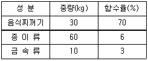
- 약 20%
- 약 25%
- 약 30%
- 약 35%
(정답률: 80%)
14. 와전류선별기에 관한 내용과 가장 거리가 먼 것은?
- 비철금속의 분리, 회수에 이용된다.
- 자력선을 도체가 스칠 때에 진행방향과 직각방향으로 힘이 작용하는 것을 이용한다.
- 드럼식, 벨트식, 플리식으로 대별되며 사용 장소에 적합하게 사용한다.
- 연속적으로 변화하는 자장 속에 비자성이며 전기 전도성이 좋은 금속인 구리, 알루미늄, 아연 등을 넣으면 금속내에 소용돌이 전류가 발생하여 반발력이 생기는데 이 반발력 차를 이용하여 분리시킨다.
(정답률: 70%)
15. 투입량이 1ton/hr이고 회수량이 600kg/hr(그 중 회수대상물질은 500kg/hr)이며 제거량은 400kg/hr (그중 회수대상물질은 100kg/hr)일 때 선별효율(%)은? (단, Worrell식 적용)
- 약 63
- 약 69
- 약 74
- 약 78
(정답률: 알수없음)
16. 최소 크기가 10cm인 폐기물을 2cm로 파쇄하고자 할 때 Kick's 법칙에 의한 소요 에너지는 동일 폐기물을 4cm로 파쇄할 때 소요되는 에너지의 몇 배인가? (단, n=1로 가정한다.)
- 약 1.8배
- 약 2.4배
- 약 2.9배
- 약 3.7배
(정답률: 55%)
17. 인구 100,000인 어느 도시의 1인 1일 쓰레기 배출량이 1.8kg이다. 쓰레기 밀도가 0.5ton/m3이라면 적재량 15m3의 트럭이 처리장으로 한 달 동안 운반해야 할 횟수는? (단, 한 달은 30일, 트럭은 1대 기준이다.)
- 510회
- 620회
- 720회
- 84
(정답률: 72%)
18. 압축기에 쓰레기를 넣고 압축시킨 결과 용적감소율이 80%이었다고 한다. 이 때 압축비 (compaction ratio)는?
- 1.5
- 2.5
- 4.0
- 5.0
(정답률: 알수없음)
19. 70%의 함수율을 가진 쓰레기를 건조시킨 후 함수율이 20%가 되었다면 쓰레기 톤당 증발되는 수분의 양은?
- 615kg
- 625kg
- 635kg
- 645kg
(정답률: 알수없음)
20. 어떤 도시에서 한 해 동안 폐기물 수거량이 253000 톤/년 이였다. 수거 인부는 1일 850명이었으며, 수거대상 인구는 250,000명이라고 할 때 1인 1일 폐기물 생산량은 몇 kg/인‧day인가?
- 1.87
- 2.77
- 3.15
- 4.12
(정답률: 60%)
2과목: 폐기물 처리 기술
21. 매립지의 표면차수막에 관한 설명으로 옳지 않은 것은?
- 매립지 지반의 투수계수가 큰 경우에 사용한다.
- 지하수 집배수시설이 필요하다.
- 단위면적당 공사비는 비싸나 총공사비는 싸다.
- 보수는 매립 전에는 용이하나 매립 후는 어렵다.
(정답률: 65%)
22. 고형화 처리 중 시멘트 기초법에서 가장 흔히 사용되는 보통 포틀랜드 시멘트 성상의 주성분은?
- CaO, Al2O3
- CaO, SiO2
- CaO, MgO
- CaO, Fe2O3
(정답률: 70%)
23. 함수율 95%인 슬러지를 함수율 70%의 탈수 cake로 만들었을 경우의 무게비(탈수 후/탈수 전)는? (단, 비중 1.0, 분리액으로 유출된 슬러지량은 무시)
- 1/4
- 1/5
- 1/6
- 1/7
(정답률: 77%)
24. 30ton의 음식물쓰레기를 볏짚과 혼합하여 C/N비 30으로 조정하여 퇴비화하고자 한다. 이때 볏짚의 필요량은? (단, 음식물쓰레기와 볏짚의 C/N 비는 각각 20과 100이고, 다른 조건은 고려하지 않음)
- 약 4.3 ton
- 약 7.3 ton
- 약 9.3 ton
- 약 11.3 ton
(정답률: 50%)
25. 용적 200m3인 혐기성소화조가 휘발성 고형물(VS)을 70% 함유하는 슬러지고형물을 하루 100kg 받아들인다면 이소화조의 휘발성 고형물부하율은?
- 0.35kgVS/m3‧d
- 0.55kgVS/m3‧d
- 0.75kgVS/m3‧d
- 0.95kgVS/m3‧d
(정답률: 55%)
26. 인구가 400,000명인 어느 도시의 쓰레기배출 원 단위가 1.2kg/인‧일 이고, 밀도는 0.45t/m3으로 측정되었다. 이러한 쓰레기를 분쇄하여 그 용적이 2/3로 되었으며, 이 분쇄된 쓰레기를 다시 압축하면서 또다시 1/3 용적이 축소되었다. 분쇄만 하여 매립할 때와 분쇄, 압축한 후에 매립할 때의 양자간의 년간 매립소요면적의 차이는? (단, Trench 깊이는 4m이며 기타 조건은 고려 안함)
- 약 12,820m2
- 약 16,230m2
- 약 21,630m2
- 약 25,540m2
(정답률: 알수없음)
27. 함수율 96%, 고형물 중의 유기물 함유비가 75%의 생슬러지를 소화하여 유기물의 60%가 가스 및 탈리액으로 전환되고 함수율 95%의 소화슬러지가 얻어졌다. 똑같은 슬러지를 같은 조건에서 2,000m3를 소화한 경우 소화슬러지 발생량은 얼마인가? (단, 소화전, 후의 슬러지의 비중은 1.0으로 가정)
- 520m3
- 640m3
- 760m3
- 880m3
(정답률: 알수없음)
28. PVC 합수차수막에 대한 내용으로 틀린 것은?
- 기후에 강하다.
- 접합이 용이하다.
- 대부분의 유기화학물질에 약하다.
- 강도가 높다.
(정답률: 알수없음)
29. 고화법은 무기적 고형화와 유기적 고형화 방법으로 나눌 수 있다. 유기적 고형화의 특징에 대한 설명으로 옳지 않은 것은?
- 방사성 폐기물 처리에 적용하기 어렵다.
- 최종 고화체의 체적 증가가 다양하다.
- 수밀성이 크며 다양한 폐기물에 적용할 수 있다.
- 미생물, 자외선에 대한 안전성이 약하다.
(정답률: 40%)
30. 매립지에서 침출된 침출수의 농도가 반으로 감소하는데 약 3.3년이 걸린다면 이 침출수의 농도가 90% 분해되는데 걸리는 시간은? (단, 1차 반응 기준)
- 약 7년
- 약 9년
- 약 11년
- 약 13
(정답률: 60%)
31. 오염토의 토양증기추출법 복원기술에 대한 장단점으로 옳은 것은?
- 증기압이 낮은 오염물질의 제거효율이 높다.
- 다른 시약이 필요 없다.
- 추출된 기체의 대기오염방지를 위한 후처리가 필요없다.
- 유지 및 관리비가 많이 소요된다.
(정답률: 55%)
32. 폐기물 내 가스생성과정을 기간별로 4개로 나눌때 1단계인 호기성 단계에 관한 내용으로 틀린 것은?
- 폐기물내 수분이 많은 경우 반응이 늦어 호기성 단계가 길어진다.
- 가스의 발생량이 적다.
- 질소의 양이 감소하기 시작한다.
- 산소가 급감하여 거의 사라지고 탄산가스가 발생하기 시작한다.
(정답률: 25%)
33. 유기물(C6H12O6) 8kg을 혐기성으로 완전 분해할 때 생성될 수 있는 이론적 메탄의 양(Sm3)은?
- 약 2.0
- 약 3.0
- 약 4.0
- 약 5.0
(정답률: 90%)
34. 분뇨의 슬러지 건량은 3m3이며 함수율이 95%이다. 함수율을 80%까지 농축하면 농축조에서의 분리액은? (단, 비중은 1.0 기준)
- 40m3
- 45m3
- 50m3
- 55m3
(정답률: 24%)
35. 건조된 고형물의 비중이 1.42이고 건조이전의 슬러지내 고형물 함량이 40%, 건조중량이 400kg이라고 할 때 건조 이전의 슬러지 케익의 부피는?
- 약 0.5m3
- 약 0.7m3
- 약 0.9m3
- 약 1.2m3
(정답률: 43%)
36. 다음 중 지하수의 특성이라고 볼 수 없는 것은?
- 무기이온 함유량이 높고, 경도가 높다.
- 광범위한 지역의 환경조건에 영향을 받는다.
- 매생물이 거의 없고 자정속도가 느리다.
- 유속이 느리고 수온변화가 적다.
(정답률: 알수없음)
37. 중금속슬러지를 시멘트 고형화할 때 용적변화는? (단, - 고형화 처리 전 : 중금속슬러지 비중 1.2, - 고형화 처리 후 : 폐기물의 비중 1.5, - 시멘트 첨가량 : 슬러지 무게의 50%)
- 20% 증가
- 30% 증가
- 40% 증가
- 50% 증가
(정답률: 알수없음)
38. 슬러지 매립지 침출수에 함유되어 있는 암모니아를 염소로 처리하려고 한다. 침출수 발생량은 3780m3/d 이고, 이를 처리하기 위해 7.7kg/d 의 염소를 주입하고 잔류염소농도는 0.2mg/L 이었다면 염소요구량은 몇 mg/L 인가?
- 약 4.31
- 약 3.83
- 약 2.21
- 약 1.84
(정답률: 알수없음)
39. 건조된 고형분의 비중이 1.4 이며 이 슬러지케익의 건조 이전에 고형분의 함량이 50% 이라면 건조 이전 슬러지 케익의 비중은?
- 1.129
- 1.132
- 1.143
- 1.167
(정답률: 70%)
40. 차수설비인 복합차수층에서 일반적으로 합성차수막 바로 상부에 위치하는 것은?
- 점토층
- 침출수집배수층
- 차수막지지층
- 공기층(완충지층)
(정답률: 46%)
3과목: 폐기물 소각 및 열회수
41. 완전연소일 경우 (CO2)max의 값(%)은? (단, (CO2) : 배출가스 중 CO2 량(Sm3/Sm3)(O2) : 배출가스 중 O2 량(Sm3/Sm3)(N2) : 배출가스 중 N2 량(Sm3/Sm3))
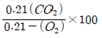
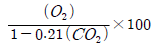
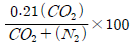
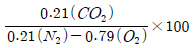
(정답률: 47%)
42. 황 성분이 2%인 중유 300ton/hr 를 연소하는 열 설비에서 배기가스 중 SO2를 CaCO3로 완전 탈황하는 경우 이론상 필요한 CaCO3의 양은? (단, Ca: 40, 중유 중 S는 모두 SO2로 산화된다.)
- 약 13ton/hr
- 약 19ton/hr
- 약 24ton/hr
- 약 27ton/hr
(정답률: 50%)
43. 다음의 조건에서 화격자 연소율(kg/m2 ‧ hr)은?
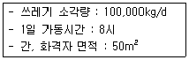
- 185kg/m2‧ h
- 250kg/m2‧ h
- 320kg/m2‧ h
- 2300kg/m2‧ h
(정답률: 82%)
44. 주성분이 C10H17O6N인 슬러지 폐기물을 소각처리하고자 한다. 폐기물 5kg 소각에 이론적으로 필요한 공기의 무게는? (단, 공기 중 산소량은 중량비로 23%)
- 약 21kg
- 약 26kg
- 약 32kg
- 약 38kg
(정답률: 34%)
45. 비중이 0.9 이고 황 함유량이 3%(무게기준)인 폐유를 4kL/h 의 속도로 연소할 때 생성되는 SO2의 부피(Sm3)와 무게(kg)는 각각 얼마인가? (단, 황성분은 전량 SO2 로 전환됨)
- 118.9 Sm3 , 259kg
- 97.9 Sm3 , 238kg
- 75.6 Sm3 , 216kg
- 57.8 Sm3 , 208kg
(정답률: 알수없음)
46. 전기집진기에 대한 설명으로 틀린 것은?
- 회수가치성이 있는 입자 포집이 가능하다.
- 고온가스, 대량의 가스처리가 가능하다.
- 전압변동과 같은 조건변동에 쉽게 적응하기 어렵다.
- 유지관리가 어렵고 유지비가 많이 소요된다.
(정답률: 55%)
47. 석탄의 탄화도가 클수록 나타나는 성질로 틀린것은?
- 착화온도가 높아진다.
- 수분 및 휘발분이 감소한다.
- 연소 속도가 작아진다.
- 발열량이 감소한다.
(정답률: 알수없음)
48. CO 100kg을 연소시킬 때 필요한 산소량(부피)과 이때 생성되는 CO2 부피는?
- 10 Sm3 O2, 40 Sm3 CO2
- 40 Sm3 O2, 80 Sm3 CO2
- 60 Sm3 O2, 120 Sm3 CO2
- 80 Sm3 O2, 160 Sm3 CO2
(정답률: 70%)
49. 유동층소각로의 장, 단점을 설명한 것 중 틀린것은?
- 기계적 구동부분이 많아 고장율이 높다.
- 연소효율이 높아 미연소분이 적고 2차 연소실이 불필요하다.
- 삽으로부터 찌꺼기의 분리가 어렵다.
- 반응시간이 빨라 소각시간이 짧다(로부하율이 높다)
(정답률: 알수없음)
50. RDF 소각로의 문제점과 가장 거리가 먼 것은?
- 소각시설의 부식발생으로 수명이 단축될 수 있다.
- 연료공급의 신뢰성 문제가 있을 수 있다.
- 염소보다는 유황의 다량 함유로 SOx 발생이 문제가 된다.
- 시설비가 고가이고 숙련된 기술이 필요하며 연소 분진과 대기오염에 대한 주의가 요망된다.
(정답률: 59%)
51. 열교환기인 과열기에 대한 설명으로 틀린 것은?
- 과열기는 그 부착 위치에 따라 전열 형태가 다르다.
- 방사형 과열기는 화실의 천정부 또는 로벽에 배치한다.
- 일반적으로 보일러의 부하가 높아질수록 방사 과열기에 의한 과열온도가 상승한다.
- 과열기의 재료는 탄소강과 니켈, 몰리브덴, 바나듐 등을 함유한 특수 내열 강관을 사용한다.
(정답률: 25%)
52. 증기터어빈 형식이 축류 터어빈, 반경류 터어빈인 경우 분류관점으로 옳은 것은?
- 증기작동방식
- 증기이용방식
- 피구동기
- 증유동방향
(정답률: 알수없음)
53. C3H8 1Sm3를 연소시킬 때 이론건조 연소가스량은?
- 17.8 Sm3/Sm3
- 19.8 Sm3/Sm3
- 21.8 Sm3/Sm3
- 23.8 Sm3/Sm3
(정답률: 46%)
54. 기체연료의 장단점으로 틀린 것은?
- 연소 효율이 높고 안정된 연소가 된다.
- 완전연소시 많은 과잉공기(200~300%)가 소요된다.
- 설비비가 많이 들고 비싸다.
- 연료의 예열이 쉽고 유황 함유량이 적어 SOx발생량이 적다.
(정답률: 알수없음)
55. 로타리 킬른식(rotary kiln)소각로의 특찡에 대한 설명으로 틀린 것은?
- 습식가스 세정시스템과 함께 사용할 수 있다.
- 넓은 범위의 액상 및 고상 폐기물을 소각 할 수 있다.
- 용융상태의 물질에 의하여 방해받지 않는다.
- 예열, 혼합, 파쇄 등 전처리 후 주입한다.
(정답률: 알수없음)
56. 세로, 가로, 높이가 각각 1.0m, 1.2m, 1.5m인 연소실의 연소실 열부하량을 6×105 kcal/m3·hr로 유지하기 위해서 연소실 내로 발열량 10,000 kcal/kg의 중유가 1시간당 투입, 연소 되는 양(kg)은?
- 108 kg/hr
- 128 kg/hr
- 148 kg/hr
- 168 kg/hr
(정답률: 50%)
57. 어떤 연료를 분석한 결과 C 83%, H 14%, H2O3% 였다면 건조연료 1kg의 연소에 필요한 이론공기량은?
- 7.5 Sm3/kg
- 9.5 Sm3/kg
- 11.5 Sm3/kg
- 13.5 Sm3/kg
(정답률: 알수없음)
58. 열분해 온도에 따른 가스의 구성비(%) 중 열분해 온도가 높을수록 구성비(%)가 줄어드는 가스는?
- 수소
- 메탄
- 이산화탄소
- 일산화탄소
(정답률: 46%)
59. 저위발열량이 8000 kcal/Sm3의 가스연료의 이론연소온도는 몇 ℃인가? (단, 이론연소가스량은 10Sm3/Sm3, 연료연소가스의 평균 정압비율은 0.35kcal/Sm3·℃, 기준온도는 실온(15℃)으로 한다. 지금 공기는 예열되지 않으며, 연소가스는 해리되지 않는 것으로 한다.)
- 약 2100℃
- 약 2200℃
- 약 2300℃
- 약 2400℃
(정답률: 알수없음)
60. 황화수소 1Sm3의 이론연소 공기량은?
- 7.1Sm3
- 8.1Sm3
- 9.1Sm3
- 10.1Sm3
(정답률: 알수없음)
4과목: 폐기물 공정시험기준(방법)
61. 시료채취시 대상폐기물의 양이 10톤인 경우 시료의 최소수는?
- 10
- 14
- 20
- 24
(정답률: 46%)
62. 폐기물이 적재되어 있는 5톤 미만의 차량에서 시료를 채취할 경우에 시료 채취 개수에 대하여 옳은 것은?
- 수직 및 평면상으로 9등분한 후 각 등분마다 시료를 채취한다.
- 임의의 5개소에서 100g 씩 균등량 혼합하여 채취한다.
- 평면상에서 6등분한 후 각 등분마다 시료를 채취한다.
- 분쇄하여 균일하게 한 후 필요한 양을 임의의 5개소에서 깊이에 따라 3회에 나누어 채취한다.
(정답률: 60%)
63. 자외선/가시선 분광법으로 납을 측정할 때 전처리를 하지 않고 직접 시료를 사용하는 경우 시료 중에 시안화합물이 함유되었을 때 조치사항으로 옳은 것은?
- 염산 산성으로 하여 끓여 시안화물을 완전히 분해 제거한다.
- 사염화탄소로 추출하고 수층을 분리하여 시안화물을 완전히 제거한다.
- 음이온 계면활성제와 소량의 활성탄을 주입하여 시안화물을 완전히 흡착 제거한다.
- 질산(1+5)와 관산화수소를 가하여 시안화물을 완전히 분해 제거한다.
(정답률: 알수없음)
64. 다음은 고상 폐기물의 pH(유리전극법)를 측정하기 위한 실험절차이다. ( )안에 내용으로 옳은 것은?
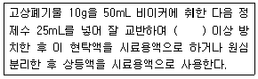
- 10분
- 30분
- 1시간
- 2시간
(정답률: 70%)
65. 기름성분에 관한 시험(중량법)에 관한 내용 중정량한계 기준으로 적절한 것은?
- 0.01% 이하
- 0.1% 이하
- 200mg 이하
- 100mg 이하
(정답률: 알수없음)
66. 다음은 강열감량 및 유기물 함량 시험방법에 대한 내용이다. ( )안에 옳은 것은?
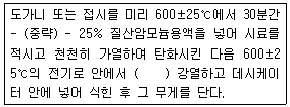
- 1시간
- 2시간
- 3시간
- 4시간
(정답률: 알수없음)
67. 다음은 콘크리트 고형화물의 시료채취에 관한 내용이다. ( ) 안에 맞는 내용은?
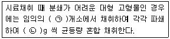
- ㉠ 5, ㉡ 100
- ㉠ 6, ㉡ 100
- ㉠ 6, ㉡ 500
- ㉠ 9, ㉡ 500
(정답률: 40%)
68. 원자흡수분광광도법으로 비소를 측정할 때 비화수소를 발생하도록 하기 위해 시료 중의 비소를 3가 비소로 환원한 다음 넣어 주는 시약은?
- 아연
- 이염화주석
- 염화제일주석
- 시안화칼륨
(정답률: 알수없음)
69. pH를 유지 전극법으로 측정할 때 임의의 한 종류의 pH 표준용액에 대하여 검출부를 정제수로 잘 씻은 다음 5회 반복 측정한 값의 재현성 범위로 옳은 것은?
- ±0.01 이내
- ±0.⑤ 이내
- ±0.1 이내
- ±0.5 이내
(정답률: 30%)
70. 다음의 폐기물 중 금속류 중 유도결합플라스마 원자발광분광법으로 측정하지 않는 것은?
- 납
- 비소
- 카드뮴
- 수은
(정답률: 알수없음)
71. 수소이온농도(pH)시험방법에 관한 설명으로 틀린 것은?(단, 유리전극법 기준)
- pH를 0.1까지 측정한다.
- 기준전극은 은-염화은의 칼로멜 전극 등으로 구성된 전극으로 pH측정기에서 측정 전위 값의 기준이 된다.
- 유리전극은 일반적으로 용액의 색도, 탁도, 콜로이드성 물질들, 산화 및 환원성 물질들 그리고 염도에 의해 간섭을 받지 않는다.
- pH는 온도변화에 영향을 받는다.
(정답률: 43%)
72. 자외선/가시선 분광광도계 광원부의 광원 중 자 외부의 광원으로 주로 사용되는 것은?
- 텅스텐램프
- 중공음극램프
- 나트륨램프
- 중수소 방전관
(정답률: 64%)
73. 다음은 폐기물의 용출시험방법에 관한 사항이다. ( )안에 옳은 내용은?
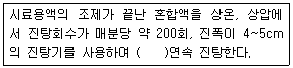
- 2시간
- 4시간
- 6시간
- 8시간
(정답률: 알수없음)
74. 총칙에서 규정된 내용과 가장 거리가 먼 것은?
- 공정시험기준 이외의 방법이라도 측정결과가 같거나 그 이상의 정확도가 있다고 국내외에서 공인된 방법은 이를 사용할 수 있다.
- 공정시험기준에 기재한 방법 중 세부조작은 시험의 본질에 영향을 주지 않는다면 실험자가 일부를 변경할 수 있다.
- 하나 이상의 공정시험기준으로 시험한 결과가 서로 달라 제반 기준의 적부판정에 영향을 줄 경우에는 정확도가 높은 방법으로 판정한다.
- 공정시험기준에서 규정하지 않은 사항에 대해서는 일반적인 화학적 상식에 따른다.
(정답률: 17%)
75. 다음 그림은 시료의 축소방법 중 어느 방법인가?
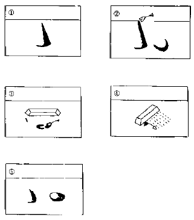
- 구획법
- 교호삽법
- 원추 4분법
- 면적법
(정답률: 42%)
76. 자외선/가시선 분광법에 의하여 시안을 분석할 경우, 간섭물질의 제거방법으로 틀린 것은?
- 휘발성 유기물질은 과망간산칼륨으로 분해 후 헥산으로 추출 분리한다.
- 황화합물이 함유된 시료는 아세트산아연용액을 넣어 제거한다.
- 잔류염소가 함유된 시료는 L-아스코빈산 용액을 넣어 제거한다.
- 잔류염소가 함유된 시료는 이산화비소산나트륨 용액을 넣어 제거한다.
(정답률: 알수없음)
77. X선 회절기법으로 석면 측정시 X선 회절기로 판단할 수 있는 석면의 정량범위는?
- 0.1~100.0 wt%
- 1.0~100.0 wt%
- 0.1~10.0 wt%
- 1.0~10.0 wt%
(정답률: 알수없음)
78. 시료의 산분해 전처리 방법 중 유기물 등이 많이 함유하고 있는 대부분의 시료에 적용하는 것으로 가장 적합한 것은?
- 질산분해법
- 염산분해법
- 질산-염산분해법
- 질산-황산분해법
(정답률: 알수없음)
79. 다음 용어의 정의에 대한 설명 중 틀린 것은?
- “약”이라 함은 기재된 양에 대하여 ±10% 이상의 차가 있어서는 안 된다.
- 감압 또는 진공이라 함은 따로 규정이 없는 한 15mmHg 이하를 말한다.
- 방울수라 함은 20℃에서 정제수 20방울을 적하할 때 그 부피가 약 1mL 되는 것을 뜻한다.
- “정밀히 단다”라 함은 규정된 양의 검체를 분석용 저울로 0.1mg까지 다는 것을 말한다.
(정답률: 알수없음)
80. 용출시험 대상의 시료용액의 조제에 있어서 사용하는 용매의 pH범위는?
- 4.8 ~ 5.3
- 5.8 ~ 6.3
- 6.8 ~ 7.3
- 7.8 ~ 8.3
(정답률: 73%)
5과목: 폐기물 관계 법규
81. 다음은 방치폐기물의 처리이행보증보험에 관한 내용이다. ( )안에 옳은 내용은?
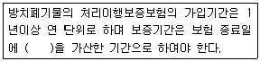
- 15일
- 30일
- 60일
- 90일
(정답률: 60%)
82. 폐기물 처리공제 조합에 대한 내용으로 틀린 것은?
- 조합은 주된 사무소의 소재지에서 설립등기를 함으로써 성립한다.
- 조합은 법인으로 한다.
- 조합은 영업지역내 폐기물을 처리하기 위한 공제사업을 한다.
- 조합의 조합원은 공제사업을 하는데에 필요한 분담금을 조합에 내야 한다.
(정답률: 알수없음)
83. 폐기물 처분시설 또는 재활용시설 중 의료폐기물을 대상으로 하는 시설의 기술관리인 자격으로 틀린 것은?
- 폐기물처리산업기사
- 임상병리사
- 위생사
- 산업위생지도사
(정답률: 알수없음)
84. 폐기물 통계조사를 위한 폐기물발생 및 처리현황은 몇 년마다 조사하여야 하는가?
- 1년 마다
- 2년 마다
- 3년 마다
- 5년 마다
(정답률: 알수없음)
85. 주변지역 영향 조사대상 폐기물처리시설 기준으로 틀린 것은?(단, 폐기물처리업자가 설치, 운영)
- 시멘트 소성로(폐기물을 연료로 사용하는 경우로 한정한다.)
- 매립면적 15만 제곱미터 이상의 사업장 일반폐기물 매립시설
- 매립면적 3만 제곱미터 이상의 사업장 지정폐기물 매립시설
- 1일 처리능력이 50톤 이상인 사업장 폐기물 소각 시설(같은 사업장에 여러 개의 소각시설이 있는 경우에는 각 소각시설의 1일 처리능력의 합계가 50톤 이상인 경우를 말한다.)
(정답률: 55%)
86. 의료폐기물의 종류와 가장 거리가 먼 것은?
- 병상의료폐기물
- 격리의료폐기물
- 위해의료폐기물
- 일반의료폐기물
(정답률: 67%)
87. 폐기물처리업의 업종으로 해당되지 않는 것은?
- 폐기물 종합처분업
- 폐기물 최종처분업
- 폐기물 재활용 수집, 운반업
- 폐기물 종합재활용업
(정답률: 67%)
88. 다음은 폐기물 수집, 운반업자가 임시 보관장소에 의료폐기물을 보관하는 경우의 폐기물 보관량 및 처리기한에 관한 내용이다. ( )안에 옳은 내용은?
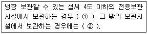
- ① 5일 이내, ② 2일 이내
- ① 7일 이내, ② 2일 이내
- ① 5일 이내, ② 3일 이내
- ① 7일 이내, ② 3일 이내
(정답률: 알수없음)
89. 폐기물 관리의 기본원칙으로 틀린 것은?
- 누구든지 폐기물을 배출하는 경우에는 주변 환경이나 주민의 건강에 위해를 끼치지 아니하도록 사전에 적절한 조치를 하여야 한다.
- 폐기물 최종처분시 매립보다는 소각처분을 우선적으로 고려하여야 한다.
- 국내에서 발생한 폐기물은 가능하면 국내에서 처리되어야 하고, 폐기물의 수입은 되도록 억제 되어야한다.
- 폐기물은 그 처리과정에서 양과 유해성을 줄이도록 하는 등 환경보전과 국민건강보호를 적합하게 처리되어야 한다.
(정답률: 60%)
90. 법에서 사용하는 용어의 뜻으로 옳지 않은 것은?
- 폐기물처리시설: 폐기물의 중간처분시설, 최종처분시설 및 재활용시설로서 대통령령으로 정하는 시설을 말한다.
- 폐기물감량화시설: 생산공정에서 발생하는 폐기물의 양을 줄이고 사업장 내 재활용을 통하여 폐기물배출을 최소화하는 시설로서 대통령령으로 정하는 시설을 말한다.
- 처분: 폐기물의 소각, 중화, 파쇄, 고형화 등의 중간처분과 매립하거나 해역으로 배출하는 등의 최종처분을 말한다.
- 재활용: 폐기물 재사용, 재생이용하거나 에너지를 회수할 수 있는 상태로 만드는 활동으로서 대통령령으로 정하는 활동을 말한다.
(정답률: 알수없음)
91. 폴리클로리네이티드비페닐 함유 폐기물의 지정폐기물 기준은?
- 액체상태 외의 것(용출액 1리터당 0.01밀리그램 이상 함유한 것으로 한정한다.)
- 액체상태 외의 것(용출액 1리터당 0.03밀리그램 이상 함유한 것으로 한정한다.)
- 액체상태 외의 것(용출액 1리터당 0.001밀리그램 이상 함유한 것으로 한정한다.)
- 액체상태 외의 것(용출액 1리터당 0.003밀리그램 이상 함유한 것으로 한정한다.)
(정답률: 알수없음)
92. 사용 종료되거나 폐쇄된 매립시설이 소재한 토지의 소유권 또는 소유권 외의 권리를 가지고 있는 자가 그 토지를 이용하기 위해 토지이용계획서를 환경부장관에게 제출할 때 첨부하여야 하는 서류와 가장 거리가 먼 것은?
- 이용하려는 토지의 도면
- 매립폐기물의 종류, 양 및 복토상태를 적은 서류
- 토양오염분석결과표
- 지적도
(정답률: 70%)
93. 폐기물 처리시설 종류의 구분이 틀린 것은?
- 기계적 재활용 시설: 유수 분리 시설
- 화학적 재활용 시설: 연료화 시설
- 생물학적 재활용 시설: 버섯재배시설
- 생물학적 재활용 시설: 호기성, 혐기성 분해시설
(정답률: 알수없음)
94. 생활폐기물 수집, 운반 대행자에 대한 대행실적 평가 결과가 대행실적평가 기준에 미달한 경우 생활폐기물 수집, 운반 대행자에 대한 과징금액 기준은? (단, 영업정지 3개월을 갈음하여 부과할 경우)
- 1천만원
- 2천만원
- 3천만원
- 5천만원
(정답률: 0%)
95. 매립시설 검사기관으로 틀린 것은?
- 한국환경공단
- 한국매립지관리공단
- 한국건설기술연구원
- 한국농어촌공사
(정답률: 25%)
96. 폐기물처리시설 주변지역 영향조사 기준 중 조사횟수에 관한 내용으로 옳은 것은?
- 각 항목당 계절을 달리하여 4회 이상 측정하되, 악취는 여름(6월부터 8월까지)에 2회 이상 측정하여야 한다.
- 각 항목당 계절을 달리하여 4회 이상 측정하되, 악취는 여름(6월부터 8월까지)에 1회 이상 측정하여야 한다.
- 각 항목당 계절을 달리하여 2회 이상 측정하되, 악취는 여름(6월부터 8월까지)에 2회 이상 측정하여야 한다.
- 각 항목당 계절을 달리하여 2회 이상 측정하되, 악취는 여름(6월부터 8월까지)에 1회 이상 측정하여야 한다.
(정답률: 29%)
97. 설치승인을 받아 폐기물처리시설을 설치한 자는 그가 설치한 폐기물처리시설의 사용을 끝내거나 폐쇄하려면 환경부령으로 정하는 바에 따라 환경부장관에게 신고하여야 한다. 이를 위반하여 신고하지 않는 자에 대한 과태료 처분기준은?
- 100만원 이하의 과태료
- 200만원 이하의 과태료
- 300만원 이하의 과태료
- 500만원 이하의 과태료
(정답률: 알수없음)
98. 누구든지 특별자치도지사, 시장, 군수, 구청장이나 공원, 도로 등 시설의 관리자가 폐기물의 수집을 위하여 마련한 장소나 설비 외의 장소에 폐기물을 버려서는 아니 된다. 이를 위반하여 사업장 폐기물을 버리거나 매립한 자에 대한 벌칙 기준은?
- 7년 이하의 징역이나 5천만원 이하의 벌금(지역형과 벌금형을 병과 할 수 있다)
- 5년 이하의 징역이나 3천만원 이하의 벌금
- 3년 이하의 징역이나 2천만원 이하의 벌금
- 2년 이하의 징역이나 1천만원 이하의 벌금
(정답률: 46%)
99. 설치신고대상 폐기물처리시설의 규모 기준으로 옳은 것은?
- 일반소각시설로서 1일 처분능력이 50톤(지정폐기물의 경우에는 5톤)미만인 시설
- 일반소각시설로서 1일 처분능력이 50톤(지정폐기물의 경우에는 10톤)미만인 시설
- 일반소각시설로서 1일 처분능력이 100톤(지정폐기물의 경우에는 5톤)미만인 시설
- 일반소각시설로서 1일 처분능력이 100톤(지정폐기물의 경우에는 10톤)미만인 시설
(정답률: 알수없음)
100. 의료폐기물은 환경부장관이 지정한 기관이나 단체가 환경부장관이 정하는 고시한 검사기준에 따라 검사한 전용용기만을 사용하여 처리하여야 한다. 다음 중 환경부장관이 지정한 기관이나 단체와 가장 거리가 먼 것은?
- 한국환경공단
- 한국산업인증시험원
- 한국화학융합시험연구원
- 한국건설생활환경시험연구원
(정답률: 34%)